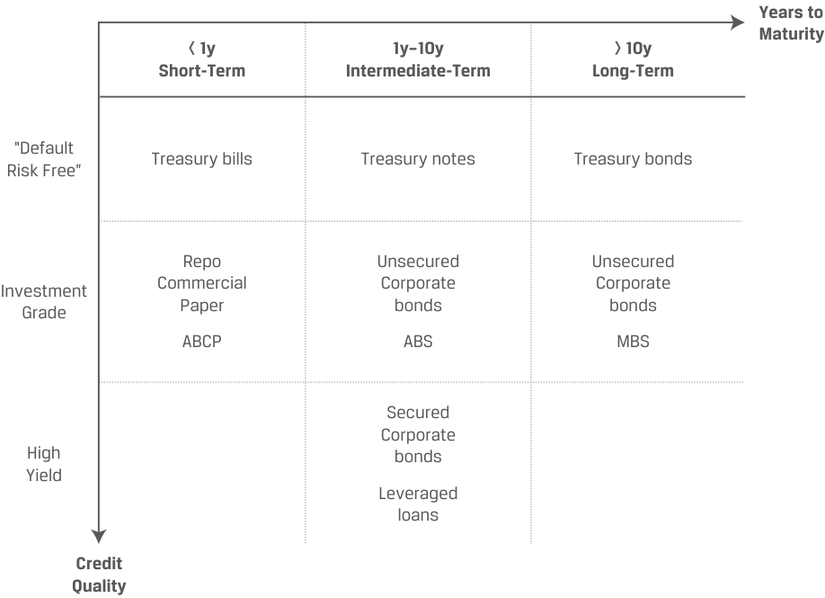
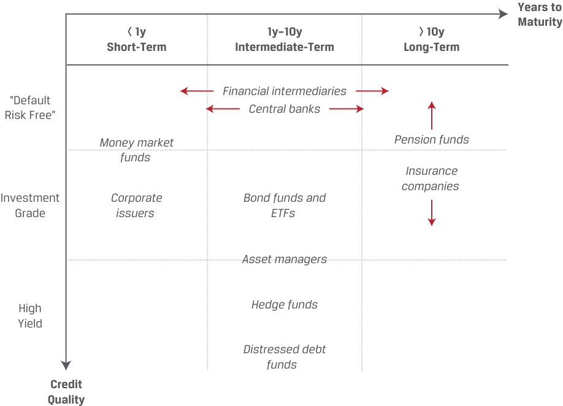
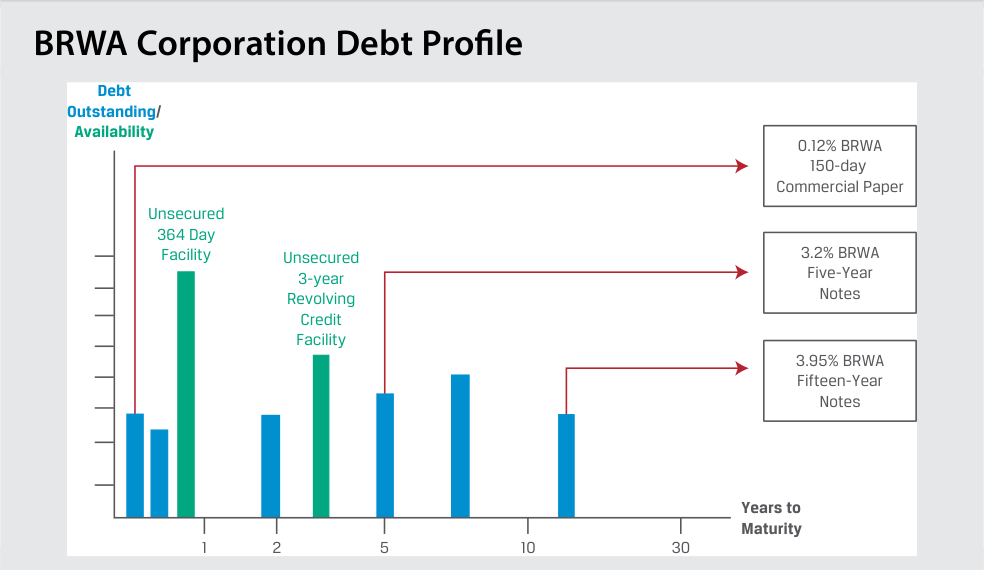
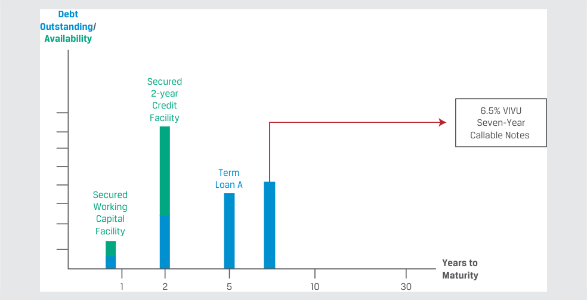
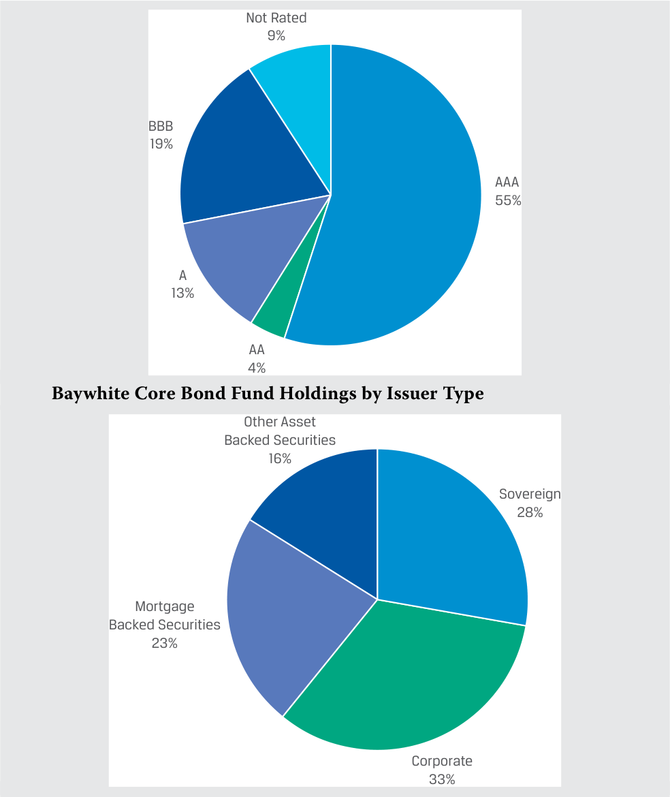
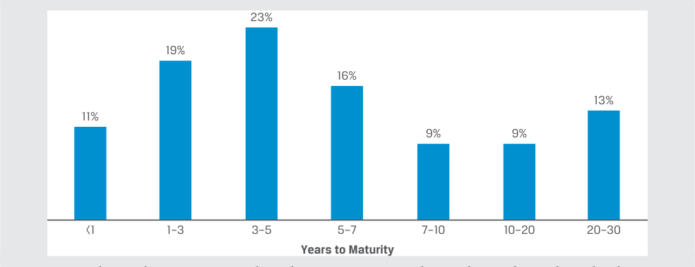
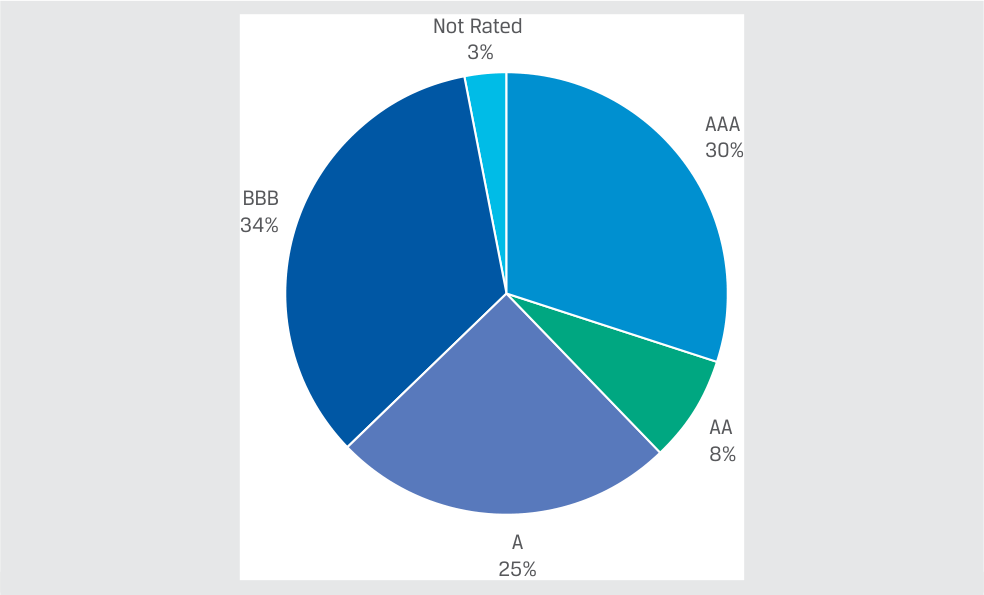
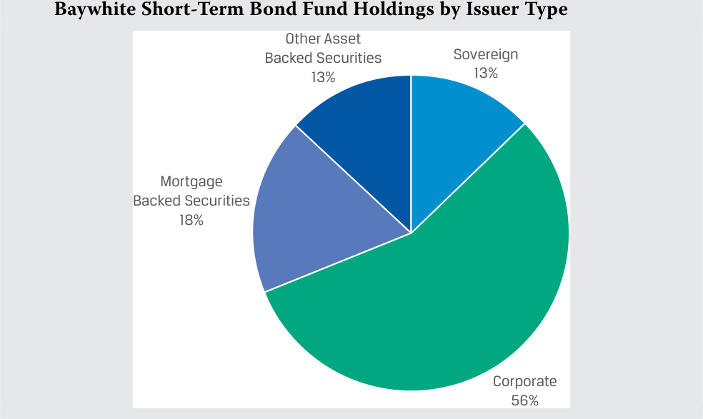
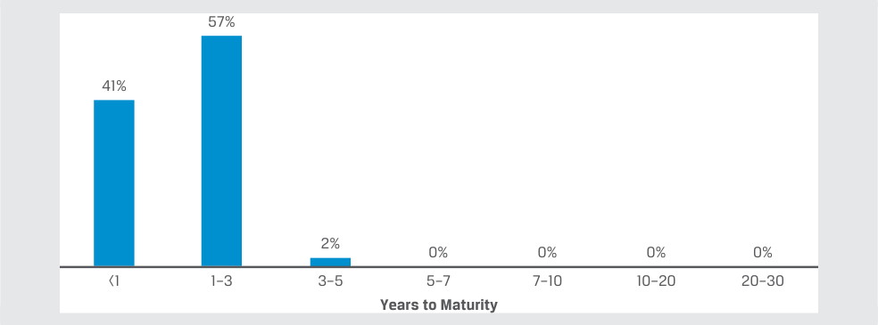

Learning Module 3 Fixed-Income Issuance and Trading - Part 1: Introduction
Volume 6: Fixed Income
Learning Module 3 Fixed-Income Issuance and Trading
Part 1/2: Introduction (PDF Pages 65–80)
Tập 6: Chứng Khoán Thu Nhập Cố Định (Fixed Income)
Học Phần 3: Phát Hành và Giao Dịch Chứng Khoán Thu Nhập Cố Định (Fixed-Income Issuance and Trading)
Phần 1/2: Giới Thiệu (Trang PDF 65–80)
L E A R N I N G M O D U L E
H Ọ C P H Ầ N
3
3
Fixed-Income Issuance and Trading
Phát Hành và Giao Dịch Chứng Khoán Thu Nhập Cố Định (Fixed-Income Issuance and Trading)
LEARNING OUTCOMES
MỤC TIÊU HỌC TẬP (LEARNING OUTCOMES)
Mastery The candidate should be able to: describe fixed-income market segments and their issuer and investor participants describe types of fixed-income indexes compare primary and secondary fixed-income markets to equity markets
Mức độ thành thạo – Ứng viên cần có khả năng: - Mô tả các phân khúc thị trường thu nhập cố định (fixed-income market segments) cùng các thành viên tham gia là tổ chức phát hành và nhà đầu tư của chúng. - Mô tả các loại chỉ số thu nhập cố định (fixed-income indexes). - So sánh thị trường thu nhập cố định sơ cấp và thứ cấp (primary and secondary fixed-income markets) với thị trường vốn cổ phần (equity markets).
INTRODUCTION
GIỚI THIỆU (INTRODUCTION)
1
1
Fixed-income instruments and markets are often categorized by issuer type, credit quality, time to maturity, and, sometimes, additional features, such as currency, geography, and environmental, social, and governance (ESG) characteristics. Fixed-income indexes are categorized in a similar manner and serve important functions, like the role of equity market indexes in stock markets. Like other financial markets, fixed-income markets are composed of primary markets in which issuers raise financing from investors with new issues and secondary markets where investors trade existing instruments with other investors. Given bonds’ finite maturities and other features, there are important distinctions in fixed-income markets from the primary and secondary markets for equities.
Các công cụ và thị trường thu nhập cố định thường được phân loại theo loại hình tổ chức phát hành (issuer type), chất lượng tín dụng (credit quality), thời gian đáo hạn (time to maturity), và đôi khi là các đặc điểm bổ sung, chẳng hạn như đồng tiền định danh (currency), khu vực địa lý (geography), và các đặc điểm về môi trường, xã hội và quản trị (ESG). Các chỉ số thu nhập cố định (fixed-income indexes) được phân loại theo cách thức tương tự và đảm nhận các chức năng quan trọng, giống như vai trò của các chỉ số thị trường cổ phiếu trên thị trường chứng khoán. Giống như các thị trường tài chính khác, thị trường thu nhập cố định bao gồm thị trường sơ cấp (primary markets) nơi các tổ chức phát hành huy động vốn từ các nhà đầu tư thông qua các đợt phát hành mới và thị trường thứ cấp (secondary markets) nơi các nhà đầu tư giao dịch các công cụ hiện hành với các nhà đầu tư khác. Xét đến kỳ hạn hữu hạn (finite maturities) và các đặc điểm khác của trái phiếu, có những điểm khác biệt quan trọng trên thị trường thu nhập cố định so với thị trường sơ cấp và thứ cấp của cổ phiếu.
LEARNING MODULE OVERVIEW
TỔNG QUAN HỌC PHẦN (LEARNING MODULE OVERVIEW)
-
Fixed-income instruments and markets are typically categorized along three dimensions: issuer type (i.e., sector), credit quality, and time to maturity.
-
Fixed-income investors have corresponding positions along the credit and maturity spectrum as they seek exposures to certain risks and attempt to match the cash flows of known future obligations.
-
Các công cụ và thị trường thu nhập cố định thường được phân loại theo ba chiều: loại hình tổ chức phát hành (tức lĩnh vực – sector), chất lượng tín dụng (credit quality), và thời gian đáo hạn (time to maturity).
-
Các nhà đầu tư thu nhập cố định có các vị thế tương ứng dọc theo phổ tín dụng và phổ kỳ hạn (credit and maturity spectrum) khi họ tìm kiếm sự tiếp cận đối với những rủi ro nhất định và cố gắng khớp các dòng tiền của các nghĩa vụ trong tương lai đã biết trước.
-
Similar to equity market indexes, fixed-income indexes track the returns of groups of securities that meet their inclusion criteria. Indexes are used to evaluate market performance, benchmark the performance of investments and investment managers, and form the basis of indexed investment strategies.
-
Fixed-income indexes can be classified as broad-based, aggregate indexes with a vast number of constituents or narrower indexes that focus on criteria such as issuer type, credit quality, and time to maturity.
-
Primary bond markets are markets in which an issuer sells a new bond or bonds to investors to raise financing, whereas secondary bond markets are markets in which existing bonds are traded among investors.
-
Tương tự như các chỉ số thị trường cổ phiếu, các chỉ số thu nhập cố định theo dõi tỷ suất sinh lợi của các nhóm chứng khoán đáp ứng các tiêu chí đưa vào rổ chỉ số (inclusion criteria). Các chỉ số được sử dụng để đánh giá hiệu quả hoạt động của thị trường, làm chuẩn tham chiếu (benchmark) cho hiệu quả của các khoản đầu tư và các nhà quản lý đầu tư, đồng thời hình thành cơ sở cho các chiến lược đầu tư theo chỉ số (indexed investment strategies).
-
Các chỉ số thu nhập cố định có thể được phân loại thành các chỉ số tổng hợp diện rộng (broad-based, aggregate indexes) với một số lượng rất lớn các chứng khoán thành phần (constituents) hoặc các chỉ số hẹp hơn tập trung vào các tiêu chí như loại hình tổ chức phát hành, chất lượng tín dụng và thời gian đáo hạn.
-
Thị trường trái phiếu sơ cấp (primary bond markets) là thị trường trong đó một tổ chức phát hành bán một hoặc nhiều trái phiếu mới cho các nhà đầu tư để huy động vốn tài trợ, trong khi thị trường trái phiếu thứ cấp (secondary bond markets) là thị trường trong đó các trái phiếu hiện hành được giao dịch giữa các nhà đầu tư.
LEARNING MODULE SELF-ASSESSMENT
TỰ ĐÁNH GIÁ HỌC PHẦN (LEARNING MODULE SELF-ASSESSMENT)
These initial questions are intended to help you gauge your current level of understanding of this learning module.
Những câu hỏi ban đầu này nhằm mục đích giúp bạn tự đánh giá mức độ hiểu biết hiện tại của mình về học phần này.
- Discuss two ways that an investor could seek to increase her expected return on a fixed-income portfolio.
- Thảo luận hai cách mà một nhà đầu tư có thể thực hiện để tìm cách gia tăng tỷ suất sinh lợi kỳ vọng trên một danh mục đầu tư thu nhập cố định.
Solution:
Lời giải:
Investors could increase credit risk with instruments with lower credit ratings. Second, provided that the yield curve is upward sloping, investors may also increase expected returns with longer-term bonds .
Các nhà đầu tư có thể gia tăng rủi ro tín dụng (credit risk) thông qua các công cụ có xếp hạng tín dụng thấp hơn. Thứ hai, với điều kiện đường cong lợi suất có độ dốc đi lên (upward sloping), các nhà đầu tư cũng có thể gia tăng tỷ suất sinh lợi kỳ vọng bằng các trái phiếu có kỳ hạn dài hơn (longer-term bonds).
- Which of the following statements about fixed-income and equity indexes is correct?
-
A. There is more turnover in equity indexes than in fixed-income indexes.
-
B. Fixed-income indexes often have more constituent securities than equity indexes.
-
C. Fixed-income index constituents are typically equally weighted, while equity index constituents are typically weighted by issuers’ market capitalization.
- Phát biểu nào sau đây về chỉ số thu nhập cố định và chỉ số cổ phiếu là đúng?
-
A. Có sự thay đổi thành phần (turnover) trong các chỉ số cổ phiếu nhiều hơn so với trong các chỉ số thu nhập cố định.
-
B. Các chỉ số thu nhập cố định thường có nhiều chứng khoán thành phần (constituent securities) hơn so với các chỉ số cổ phiếu.
-
C. Các chứng khoán thành phần của chỉ số thu nhập cố định thường có tỷ trọng bằng nhau (equally weighted), trong khi các chứng khoán thành phần của chỉ số cổ phiếu thường được tính tỷ trọng theo giá trị vốn hóa thị trường của tổ chức phát hành.
Solution:
Lời giải:
B is correct. Fixed-income indexes often have more constituent securities than equity indexes because issuers tend to have many types of instruments outstanding, and governments issue large amounts of fixed-income securities but not equity securities. The finite maturity of bonds and the higher frequency of new issuance lead to far more turnover in fixed-income indexes than in equity indexes. Fixed-income index constituents are usually weighted by market value of debt outstanding, whereas equity indexes are weighted by issuers’ market capitalizations.
B là đáp án đúng. Các chỉ số thu nhập cố định thường có nhiều chứng khoán thành phần hơn so với các chỉ số cổ phiếu bởi vì các tổ chức phát hành có xu hướng có nhiều loại công cụ nợ đang lưu hành, và các chính phủ phát hành khối lượng lớn chứng khoán thu nhập cố định nhưng không phát hành chứng khoán vốn cổ phần. Kỳ hạn hữu hạn của trái phiếu và tần suất phát hành mới cao hơn dẫn đến mức độ thay đổi thành phần (turnover) trong các chỉ số thu nhập cố định lớn hơn nhiều so với trong các chỉ số cổ phiếu. Các chứng khoán thành phần của chỉ số thu nhập cố định thường được tính tỷ trọng theo giá trị thị trường của khoản nợ đang lưu hành (market value of debt outstanding), trong khi các chỉ số cổ phiếu được tính tỷ trọng theo giá trị vốn hóa thị trường của các tổ chức phát hành.
- The Bloomberg Barclays Global Aggregate Index includes:
-
A. all issuer sizes.
-
B. issuers in multiple currencies.
- Chỉ số Tổng hợp Toàn cầu Bloomberg Barclays (Bloomberg Barclays Global Aggregate Index) bao gồm:
-
A. tất cả các quy mô tổ chức phát hành.
-
B. các tổ chức phát hành bằng nhiều đồng tiền khác nhau.
C. high-yield and unrated issuers. Solution: B is correct. The Bloomberg Barclays Global Aggregate Index includes fixed-coupon capital market securities from all major issuer types in 28 developed and emerging markets that meet the inclusion criteria. However, the index excludes high-yield and unrated debt instruments and those that do not meet minimum issuance size.
-
C. các tổ chức phát hành có lợi suất cao (high-yield) và không được xếp hạng (unrated).
-
Lời giải:
- A debut issuer seeking to sell its bonds only to a select group of investors will most likely undertake a:
-
A. public offering.
-
B. shelf registration.
-
C. private placement.
-
Solution:
B là đáp án đúng. Chỉ số Tổng hợp Toàn cầu Bloomberg Barclays bao gồm các chứng khoán thị trường vốn có lãi suất coupon cố định từ tất cả các loại hình tổ chức phát hành chính tại 28 thị trường phát triển và mới nổi đáp ứng các tiêu chí đưa vào chỉ số. Tuy nhiên, chỉ số này loại trừ các công cụ nợ có lợi suất cao (high-yield) và không được xếp hạng (unrated) cũng như những công cụ không đáp ứng quy mô phát hành tối thiểu.
C is correct. Bonds can be sold via a private placement, in which only a select group of investors or a single investor purchases the bonds. Bonds can also be sold in a public offering in which any member of the public may buy the bonds. Frequent bond issuers use a shelf registration, which is updated regularly and may be used for a range of future bond issuances.
- Một tổ chức phát hành lần đầu (debut issuer) đang tìm cách chỉ bán trái phiếu của mình cho một nhóm nhà đầu tư chọn lọc sẽ nhiều khả năng nhất thực hiện một đợt:
-
A. chào bán ra công chúng (public offering).
-
B. đăng ký phát hành khung (shelf registration).
-
C. phát hành riêng lẻ (private placement).
-
Lời giải:
- A frequent bond issuer that seeks flexibility to issue bonds opportunistically when market conditions are favorable would most likely use a:
-
A. reopening. B. shelf offering.
-
C. private placement.
-
Solution:
C là đáp án đúng. Trái phiếu có thể được bán thông qua phát hành riêng lẻ (private placement), trong đó chỉ một nhóm nhà đầu tư chọn lọc hoặc một nhà đầu tư đơn lẻ mua trái phiếu. Trái phiếu cũng có thể được bán trong một đợt chào bán ra công chúng (public offering), trong đó bất kỳ thành viên nào của công chúng cũng có thể mua trái phiếu. Các tổ chức phát hành trái phiếu thường xuyên sử dụng hình thức đăng ký phát hành khung (shelf registration), vốn được cập nhật định kỳ và có thể được sử dụng cho một loạt các đợt phát hành trái phiếu trong tương lai.
B is correct. Frequent issuers of bonds have ready access to the bond market and often choose issuance timing on an opportunistic basis, when market conditions are most favorable. Frequent bond issuers use a shelf registration or a broad, all-encompassing offering circular that is updated regularly and may be used for a range of future bond issuances. A less common strategy is to increase the size of an existing bond with a price significantly different from par, which is referred to as the reopening of an existing bond. In a private placement, only a selected investor or group of investors may buy the bonds.
- Một tổ chức phát hành trái phiếu thường xuyên tìm kiếm sự linh hoạt để phát hành trái phiếu một cách chớp thời cơ (opportunistically) khi điều kiện thị trường thuận lợi sẽ nhiều khả năng nhất sử dụng một đợt:
- A. phát hành bổ sung / mở lại (reopening).
- B. chào bán theo đăng ký khung (shelf offering).
-
C. phát hành riêng lẻ (private placement).
-
Lời giải:
B là đáp án đúng. Các tổ chức phát hành trái phiếu thường xuyên có khả năng tiếp cận sẵn sàng với thị trường trái phiếu và thường chọn thời điểm phát hành trên cơ sở chớp thời cơ, khi các điều kiện thị trường thuận lợi nhất. Các tổ chức phát hành trái phiếu thường xuyên sử dụng đăng ký phát hành khung (shelf registration) hay một bản thông tư chào bán bao quát rộng khắp được cập nhật định kỳ và có thể được sử dụng cho một loạt các đợt phát hành trái phiếu trong tương lai. Một chiến lược ít phổ biến hơn là tăng quy mô của một trái phiếu hiện hành có mức giá khác biệt đáng kể so với mệnh giá, được gọi là phát hành bổ sung / mở lại (reopening) một trái phiếu hiện hành. Trong một đợt phát hành riêng lẻ, chỉ một nhà đầu tư hoặc một nhóm nhà đầu tư được lựa chọn mới có thể mua trái phiếu.
FIXED-INCOME SEGMENTS, ISSUERS, AND INVESTORS
CÁC PHÂN KHÚC, TỔ CHỨC PHÁT HÀNH VÀ NHÀ ĐẦU TƯ THU NHẬP CỐ ĐỊNH (FIXED-INCOME SEGMENTS, ISSUERS, AND INVESTORS)
2
2
describe fixed-income market segments and their issuer and investor participants
Mục tiêu: Mô tả các phân khúc thị trường thu nhập cố định cùng các thành viên tham gia là tổ chức phát hành và nhà đầu tư của chúng.
Fixed-income instruments and markets are typically categorized along three dimensions: issuer type (often known as sector), credit quality, and time to maturity. Sometimes, instruments and markets are additionally classified by issuers’ geography, currency, and ESG characteristics.
Các công cụ và thị trường thu nhập cố định thường được phân loại theo ba chiều: loại hình tổ chức phát hành (thường được gọi là lĩnh vực – sector), chất lượng tín dụng (credit quality), và thời gian đáo hạn (time to maturity). Đôi khi, các công cụ và thị trường còn được phân loại bổ sung theo khu vực địa lý của tổ chức phát hành, đồng tiền định danh, và các đặc điểm ESG.
In contrast to equities, where issuers typically issue just one or two instruments, issuers often have many fixed-income instruments outstanding. For example, a corporate issuer may have loans or both loans and bonds, either on a short-term basis to finance working capital or a long-term basis for capital investment. Some large companies also issue commercial paper, a type of short-term bond to finance working capital needs that can be collateralized by specific assets. These debt instruments may be in varying currencies to hedge exposures and broaden access to investors. For example, at the end of 2021, Apple Inc. had over 80 fixed-income instruments but a single equity instrument (common stock) outstanding.
Trái ngược với cổ phiếu, nơi các tổ chức phát hành thường chỉ phát hành một hoặc hai công cụ, các tổ chức phát hành thường có nhiều công cụ thu nhập cố định đang lưu hành. Ví dụ, một tổ chức phát hành doanh nghiệp có thể có các khoản vay hoặc cả các khoản vay và trái phiếu, trên cơ sở ngắn hạn để tài trợ vốn lưu động hoặc trên cơ sở dài hạn để đầu tư vốn. Một số công ty lớn cũng phát hành thương phiếu (commercial paper), một loại trái phiếu ngắn hạn để tài trợ nhu cầu vốn lưu động có thể được thế chấp bằng các tài sản cụ thể. Những công cụ nợ này có thể được định danh bằng các đồng tiền khác nhau để phòng vệ rủi ro (hedge exposures) và mở rộng khả năng tiếp cận tới các nhà đầu tư. Ví dụ, vào cuối năm 2021, Apple Inc. có hơn 80 công cụ thu nhập cố định nhưng chỉ có một công cụ vốn cổ phần duy nhất (cổ phiếu phổ thông) đang lưu hành.
Exhibit 1 illustrates typical issuers and instrument types across credit and time-to-maturity segments.
Bảng minh họa 1 (Exhibit 1) minh họa các tổ chức phát hành và các loại công cụ điển hình qua các phân khúc tín dụng và thời gian đáo hạn.
Exhibit 1: Issuers across the Credit and Maturity Spectrums: Issuers and Instrument Types
Bảng minh họa 1: Các Tổ chức Phát hành qua Phổ Tín dụng và Phổ Kỳ hạn: Các Tổ chức Phát hành và Loại Công cụ (Issuers across the Credit and Maturity Spectrums: Issuers and Instrument Types)

Chú thích hình ảnh: Ma trận phân loại theo Số năm đến khi đáo hạn (Years to Maturity): Ngắn hạn (Short-Term, $< 1\text{ năm}$), Trung hạn (Intermediate-Term, $1\text{–}10\text{ năm}$), Dài hạn (Long-Term, $> 10\text{ năm}$) và Chất lượng tín dụng (Credit Quality): - “Phi rủi ro vỡ nợ” (“Default Risk Free”): Tín phiếu Kho bạc (Treasury bills, $<1\text{y}$), Trái phiếu Kho bạc trung hạn (Treasury notes, $1\text{–}10\text{y}$), Trái phiếu Kho bạc dài hạn (Treasury bonds, $>10\text{y}$), Hợp đồng mua lại (Repo, ngắn hạn). - Hạng đầu tư (Investment Grade): Thương phiếu (Commercial Paper), Thương phiếu đảm bảo bằng tài sản (ABCP), Trái phiếu doanh nghiệp không có đảm bảo (Unsecured Corporate bonds – trung và dài hạn), Chứng khoán đảm bảo bằng tài sản (ABS) và Chứng khoán đảm bảo bằng thế chấp (MBS). - Lợi suất cao (High Yield): Các khoản vay đòn bẩy (Leveraged loans) và Trái phiếu doanh nghiệp có đảm bảo (Secured Corporate bonds).
Note: ABCP is asset-backed commercial paper.
Ghi chú: ABCP là thương phiếu đảm bảo bằng tài sản (asset-backed commercial paper).
Fixed-income investors have corresponding positions along the credit and maturity spectrums as they seek to gain exposures to certain risks and to match the cash flows of known future obligations. Near-term obligations and the desire for liquid cash alternatives are often met with money market securities, while investors may assume greater interest rate risk with long-term bonds to meet obligations further in the future or pursue higher expected returns. Pension funds and insurance companies with long investment time horizons favor fixed-income instruments with fixed periodic coupon cash flows and a maturity profile that matches their long-term liabilities. Additionally, investors may take credit risk at any point on the maturity spectrum to augment returns. Exhibit 2 illustrates common investor positions across the credit and maturity spectrums.
Các nhà đầu tư thu nhập cố định có các vị thế tương ứng dọc theo phổ tín dụng và phổ kỳ hạn khi họ tìm cách tiếp cận những rủi ro nhất định và khớp các dòng tiền của các nghĩa vụ trong tương lai đã biết trước. Các nghĩa vụ ngắn hạn và mong muốn có các công cụ thay thế tiền mặt thanh khoản (liquid cash alternatives) thường được đáp ứng bằng chứng khoán thị trường tiền tệ, trong khi các nhà đầu tư có thể chấp nhận rủi ro lãi suất lớn hơn với các trái phiếu dài hạn để đáp ứng các nghĩa vụ xa hơn trong tương lai hoặc theo đuổi tỷ suất sinh lợi kỳ vọng cao hơn. Các quỹ hưu trí và các công ty bảo hiểm có tầm nhìn thời gian đầu tư dài hạn ưa chuộng các công cụ thu nhập cố định có dòng tiền coupon định kỳ cố định và cấu trúc kỳ hạn khớp với các khoản nợ phải trả dài hạn của họ. Ngoài ra, các nhà đầu tư có thể chấp nhận rủi ro tín dụng tại bất kỳ điểm nào trên phổ kỳ hạn để gia tăng tỷ suất sinh lợi. Bảng minh họa 2 (Exhibit 2) minh họa các vị thế nhà đầu tư phổ biến qua phổ tín dụng và phổ kỳ hạn.
Exhibit 2: Investors across the Credit and Maturity Spectrums: Investors
Bảng minh họa 2: Các Nhà đầu tư qua Phổ Tín dụng và Phổ Kỳ hạn: Các Nhà đầu tư (Investors across the Credit and Maturity Spectrums: Investors)

Chú thích hình ảnh: Ma trận phân loại các nhà đầu tư theo Số năm đến khi đáo hạn (Years to Maturity) ($< 1\text{y}$, $1\text{–}10\text{y}$, $> 10\text{y}$) và Chất lượng tín dụng (Credit Quality): - Ngắn hạn & Phi rủi ro vỡ nợ / Hạng đầu tư: Các ngân hàng trung ương (Central banks), Các quỹ thị trường tiền tệ (Money market funds), Các tổ chức phát hành doanh nghiệp (Corporate issuers – quản trị tiền mặt). - Trải rộng qua các kỳ hạn: Các định chế tài chính trung gian (Financial intermediaries), Các quỹ trái phiếu và ETF (Bond funds and ETFs), Các công ty quản lý tài sản (Asset managers). - Trung và Dài hạn (Hạng đầu tư): Các quỹ hưu trí (Pension funds), Các công ty bảo hiểm (Insurance companies). - Lợi suất cao (High Yield): Các quỹ phòng hộ (Hedge funds), Các quỹ đầu tư nợ xấu/nợ gặp khó khăn (Distressed debt funds).
A common measure of credit quality is a credit rating . Credit ratings are letter-grade, qualitative measures of an issuer’s ability to meet its debt obligations based on both the probability of default and the expected loss under a default scenario. Credit ratings are given and maintained by credit rating agencies for both short-term and long-term debt and for issuers and specific bond issues . Two of the largest credit rating agencies are Standard & Poor’s (S&P) and Moody’s. Many investors are restricted to instruments with credit ratings, with a limited percentage of their portfolio invested in unrated instruments. Credit risk and credit ratings will be discussed in detail in later lessons.
Một thước đo phổ biến về chất lượng tín dụng là xếp hạng tín dụng (credit rating). Xếp hạng tín dụng là các thước đo định tính bằng chữ cái đánh giá khả năng đáp ứng các nghĩa vụ nợ của tổ chức phát hành dựa trên cả xác suất vỡ nợ (probability of default) và mức tổn thất kỳ vọng (expected loss) trong kịch bản vỡ nợ. Xếp hạng tín dụng được cấp và duy trì bởi các tổ chức xếp hạng tín dụng (credit rating agencies) cho cả nợ ngắn hạn và dài hạn cũng như cho cả các tổ chức phát hành (issuers) và các đợt phát hành (issues) trái phiếu cụ thể. Hai trong số các tổ chức xếp hạng tín dụng lớn nhất là Standard & Poor’s (S&P) và Moody’s. Nhiều nhà đầu tư bị giới hạn chỉ được đầu tư vào các công cụ có xếp hạng tín dụng, với một tỷ lệ phần trăm hạn chế trong danh mục của họ được đầu tư vào các công cụ không được xếp hạng (unrated instruments). Rủi ro tín dụng và xếp hạng tín dụng sẽ được thảo luận chi tiết trong các bài học sau.
S&P CREDIT RATINGS
XẾP HẠNG TÍN DỤNG CỦA S&P (S&P CREDIT RATINGS)
S&P ratings range from AAA for the highest credit quality to D for default, with ratings in descending order of credit quality as follows:
Xếp hạng của S&P trải dài từ AAA đối với chất lượng tín dụng cao nhất đến D đối với tình trạng vỡ nợ, với các mức xếp hạng theo thứ tự giảm dần về chất lượng tín dụng như sau:
| Investment Grade | AAA | Extremely strong capacity to meet financial commitments; highest rating |
|---|---|---|
| AA | Very strong capacity to meet financial commitments |
|
| A | Strong capacity to meet financial com- mitments but somewhat susceptible to adverse economic conditions and changes in circumstances |
|
| BBB | Adequate capacity to meet financial commit- ments but more subject to adverse economic conditions |
|
| BBB- | Considered lowest investment grade by mar- ket participants |
|
| Speculative Grade _or_High Yield |
BB+ | Considered highest speculative grade by mar- ket participants |
| Phân nhóm | Mức xếp hạng | Ý nghĩa |
|---|---|---|
| Hạng đầu tư (Investment Grade) | AAA | Năng lực cực kỳ mạnh mẽ trong việc đáp ứng các cam kết tài chính; mức xếp hạng cao nhất |
| AA | Năng lực rất mạnh mẽ trong việc đáp ứng các cam kết tài chính | |
| A | Năng lực mạnh mẽ trong việc đáp ứng các cam kết tài chính nhưng hơi nhạy cảm trước các điều kiện kinh tế bất lợi và những thay đổi của hoàn cảnh | |
| BBB | Năng lực đầy đủ trong việc đáp ứng các cam kết tài chính nhưng dễ bị ảnh hưởng hơn bởi các điều kiện kinh tế bất lợi | |
| BBB- | Được các thành viên tham gia thị trường coi là mức hạng đầu tư thấp nhất (lowest investment grade) | |
| Hạng đầu cơ (Speculative Grade) hoặc Lợi suất cao (High Yield) | BB+ | Được các thành viên tham gia thị trường coi là mức hạng đầu cơ cao nhất (highest speculative grade) |
| BB | Less vulnerable in the near term but faces major ongoing uncertainties to adverse busi- ness, financial, and economic conditions |
|---|---|
| B | More vulnerable to adverse business, financial, and economic conditions but currently has the capacity to meet financial commitments |
| CCC | Currently vulnerable and dependent on favorable business, financial, and economic conditions to meet financial commitments |
| CC | Highly vulnerable; default has not yet occurred but is expected to be a virtual certainty |
| C | Currently highly vulnerable to non-payment, and ultimate recovery is expected to be lower than that of higher-rated obligations |
| D | Payment default on a financial commitment or breach of an imputed promise; also used when a bankruptcy petition has been filed or similar action taken |
| Phân nhóm | Mức xếp hạng | Ý nghĩa |
|---|---|---|
| Hạng đầu cơ (Speculative Grade) hoặc Lợi suất cao (High Yield) (tiếp theo) | BB | Ít dễ bị tổn thương hơn trong ngắn hạn nhưng phải đối mặt với những bất định lớn đang diễn ra trước các điều kiện kinh doanh, tài chính và kinh tế bất lợi |
| B | Dễ bị tổn thương hơn trước các điều kiện kinh doanh, tài chính và kinh tế bất lợi nhưng hiện tại vẫn có năng lực đáp ứng các cam kết tài chính | |
| CCC | Hiện tại dễ bị tổn thương và phụ thuộc vào các điều kiện kinh doanh, tài chính và kinh tế thuận lợi để đáp ứng các cam kết tài chính | |
| CC | Rất dễ bị tổn thương; vỡ nợ chưa xảy ra nhưng được dự kiến gần như chắc chắn sẽ xảy ra | |
| C | Hiện tại rất dễ bị tổn thương dẫn đến không thanh toán được, và mức thu hồi cuối cùng (ultimate recovery) được kỳ vọng thấp hơn so với các nghĩa vụ có xếp hạng cao hơn | |
| D | Vỡ nợ thanh toán đối với một cam kết tài chính hoặc vi phạm một lời hứa ngầm định; cũng được sử dụng khi đơn xin phá sản đã được đệ trình hoặc hành động tương tự đã được thực hiện |
Source: S&P Global Ratings.
Nguồn: S&P Global Ratings.
Developed market (DM) sovereign issuers usually represent the most creditworthy borrowers within a market and often carry a AAA rating. Because investors often assume they will receive all promised interest and principal payments on DM sovereign bonds, they comprise the “default risk free” category in Exhibit 1.
Các tổ chức phát hành chính phủ tại thị trường phát triển (developed market – DM sovereign issuers) thường đại diện cho những bên đi vay có mức độ tín nhiệm cao nhất trong một thị trường và thường mang xếp hạng AAA. Bởi vì các nhà đầu tư thường giả định rằng họ sẽ nhận được tất cả các khoản thanh toán lãi và vốn gốc đã cam kết trên trái phiếu chính phủ DM, nên chúng hợp thành danh mục “phi rủi ro vỡ nợ” (“default risk free”) trong Bảng minh họa 1.
Issuers rated BBB- (Baa3 on Moody’s scale) or higher are considered investment grade . Issuers rated BB+ (Ba1 on Moody’s scale) or lower are referred to as high yield , speculative grade, or junk. High-yield issuers include new issuers for which investors are more likely to require collateral due to less stable operating cash flows, as well as formerly investment-grade issuers whose credit quality has deteriorated since the time of issuance (known as “ fallen angels ”).
Các tổ chức phát hành được xếp hạng BBB- (Baa3 trên thang đo của Moody’s) hoặc cao hơn được coi là hạng đầu tư (investment grade). Các tổ chức phát hành được xếp hạng BB+ (Ba1 trên thang đo của Moody’s) hoặc thấp hơn được gọi là lợi suất cao (high yield), hạng đầu cơ (speculative grade), hoặc trái phiếu rác (junk). Các tổ chức phát hành lợi suất cao bao gồm các tổ chức phát hành mới mà các nhà đầu tư có nhiều khả năng yêu cầu tài sản thế chấp hơn do dòng tiền hoạt động kém ổn định hơn, cũng như các tổ chức phát hành trước đây thuộc hạng đầu tư nhưng chất lượng tín dụng đã bị suy giảm kể từ thời điểm phát hành (được gọi là “thiên thần sa ngã” – “fallen angels”).
The participation of issuers and investors in heterogeneous fixed-income markets is illustrated in the following examples.
Sự tham gia của các tổ chức phát hành và nhà đầu tư trong các thị trường thu nhập cố định không đồng nhất (heterogeneous fixed-income markets) được minh họa trong các ví dụ sau đây.
EXAMPLE 1
VÍ DỤ 1

Chú thích hình ảnh: Hồ sơ Nợ của Tập đoàn BRWA (BRWA Corporation Debt Profile) theo Dư nợ đang lưu hành / Hạn mức sẵn có (Debt Outstanding / Availability) và Số năm đến khi đáo hạn (Years to Maturity): - Dưới 1 năm: Thương phiếu kỳ hạn 150 ngày của BRWA lãi suất 0.12% (0.12% BRWA 150-day Commercial Paper) được hậu thuẫn bởi Hạn mức tín dụng không có đảm bảo 364 ngày (Unsecured 364 Day Facility). - 1–5 năm: Hạn mức tín dụng quay vòng 3 năm không có đảm bảo (Unsecured 3-year Revolving Credit Facility) và Trái phiếu kỳ hạn 5 năm của BRWA lãi suất 3.2% (3.2% BRWA Five-Year Notes). - 10–30 năm: Trái phiếu kỳ hạn 15 năm của BRWA lãi suất 3.95% (3.95% BRWA Fifteen-Year Notes).
BRWA is an example of an investment-grade corporate issuer with ready access to unsecured debt across maturities and markets as well as in different currencies either directly or through its affiliates. It uses commercial paper to meet its short-term or seasonal working capital needs, intermediate-term debt to cover more permanent working capital or medium-term investments, and long-term debt to match the longer useful life of capital investments, such as new manufacturing equipment or factories. BRWA pays a fee to a group (or syndicate ) of banks for two credit facilities , which are loan agreements with pre-specified terms and limits but with fluctuating balances based on borrower-specific needs at different points in time, analogous to a credit card. The first is a 364-day facility which backs the commercial paper program, and the second is a longer-term revolving credit facility.
BRWA là một ví dụ về một tổ chức phát hành doanh nghiệp hạng đầu tư (investment-grade corporate issuer) có khả năng tiếp cận sẵn sàng đối với các khoản nợ không có đảm bảo ở nhiều kỳ hạn và thị trường cũng như bằng các đồng tiền khác nhau một cách trực tiếp hoặc thông qua các công ty liên kết của mình. Công ty sử dụng thương phiếu để đáp ứng nhu cầu vốn lưu động ngắn hạn hoặc theo mùa vụ, nợ trung hạn để trang trải vốn lưu động thường xuyên hơn hoặc các khoản đầu tư trung hạn, và nợ dài hạn để khớp với thời gian hữu dụng dài hơn của các khoản đầu tư vốn, chẳng hạn như thiết bị sản xuất mới hoặc nhà máy. BRWA trả phí cho một nhóm (hay tổ hợp – syndicate) các ngân hàng cho hai hạn mức tín dụng (credit facilities), vốn là các thỏa thuận vay có các điều khoản và hạn mức được quy định trước nhưng có số dư biến động dựa trên nhu cầu cụ thể của bên đi vay tại các thời điểm khác nhau, tương tự như một chiếc thẻ tín dụng. Hạn mức thứ nhất là hạn mức 364 ngày dùng để hậu thuẫn cho chương trình thương phiếu, và hạn mức thứ hai là hạn mức tín dụng quay vòng (revolving credit facility) có kỳ hạn dài hơn.
The combination of domestic and cross-border operating, financing, and leasing activities in Example 1 leads many of BRWA’s real-world industry peers to have hundreds of unique debt instruments outstanding across all affiliates. We may contrast the BRWA example with VIVU, the digital media company introduced in an earlier module that has fewer fixed assets, less stable operating cash flows, and, therefore, limited access to fixed-income markets.
Sự kết hợp của các hoạt động kinh doanh, tài trợ và thuê tài sản trong nước cũng như xuyên biên giới trong Ví dụ 1 khiến nhiều công ty cùng ngành ngoài đời thực của BRWA có tới hàng trăm công cụ nợ riêng biệt đang lưu hành trên khắp tất cả các công ty liên kết. Chúng ta có thể đối chiếu ví dụ về BRWA với VIVU, công ty truyền thông kỹ thuật số đã được giới thiệu trong học phần trước vốn có ít tài sản cố định hơn, dòng tiền hoạt động kém ổn định hơn, và do đó có khả năng tiếp cận hạn chế đối với các thị trường thu nhập cố định.
EXAMPLE 2
VÍ DỤ 2
Chú thích hình ảnh: Các Công cụ Thu nhập Cố định Đã Phát hành của VIVU (VIVU Fixed-Income Issuance)

Chú thích hình ảnh: Hồ sơ Nợ của VIVU theo Dư nợ đang lưu hành / Hạn mức sẵn có (Debt Outstanding / Availability) và Số năm đến khi đáo hạn (Years to Maturity): - 1–2 năm: Hạn mức vốn lưu động có đảm bảo (Secured Working Capital Facility) và Hạn mức tín dụng 2 năm có đảm bảo (Secured 2-year Credit Facility). - 2–5 năm: Khoản vay có kỳ hạn A (Term Loan A). - 5–10 năm: Trái phiếu có thể mua lại kỳ hạn 7 năm của VIVU lãi suất 6.5% (6.5% VIVU Seven-Year Callable Notes).
VIVU is an example of a high-yield corporate issuer that has limited access to secured debt across shorter maturities. VIVU has no access to the unsecured commercial paper market but, rather, relies on partially drawn secured working capital and credit facilities from banks to meet its short-term needs. VIVU has a fully drawn loan (Term Loan A) that has a floating-rate coupon equal to MRR plus a fixed credit spread. VIVU also has seven-year callable notes outstanding under which it has the right to redeem the notes at a fixed price starting three years from issuance.
VIVU là một ví dụ về một tổ chức phát hành doanh nghiệp có lợi suất cao (high-yield corporate issuer) có khả năng tiếp cận hạn chế đối với nợ có đảm bảo ở các kỳ hạn ngắn hơn. VIVU không có khả năng tiếp cận thị trường thương phiếu không có đảm bảo mà thay vào đó dựa vào các hạn mức vốn lưu động và hạn mức tín dụng có đảm bảo được giải ngân một phần từ các ngân hàng để đáp ứng nhu cầu ngắn hạn của mình. VIVU có một khoản vay đã giải ngân toàn bộ (Term Loan A) có lãi suất coupon thả nổi bằng MRR cộng với một mức chênh lệch tín dụng cố định. VIVU cũng có các trái phiếu có thể mua lại kỳ hạn 7 năm đang lưu hành, theo đó công ty có quyền mua lại trái phiếu ở một mức giá cố định bắt đầu từ ba năm kể từ khi phát hành.
Sovereign government issuers typically have the lowest credit risk (highest credit rating) in each market, due to sovereign governments’ right to tax economic activity. Developed market sovereign bonds are often widely held by both foreign investors and foreign central banks seeking to hold reserves in the developed market’s currency in the form of an interest-bearing asset. Sovereign bonds also serve important functions in the domestic financial system. Central banks often use domestic sovereign bonds to conduct monetary policy, borrowing or lending these securities to increase or decrease monetary reserves.
Các tổ chức phát hành chính phủ quốc gia (sovereign government issuers) thường có rủi ro tín dụng thấp nhất (xếp hạng tín dụng cao nhất) tại mỗi thị trường, do quyền đánh thuế hoạt động kinh tế của chính phủ có chủ quyền. Trái phiếu chính phủ tại các thị trường phát triển thường được nắm giữ rộng rãi bởi cả các nhà đầu tư nước ngoài và các ngân hàng trung ương nước ngoài đang tìm cách nắm giữ dự trữ ngoại hối bằng đồng tiền của thị trường phát triển đó dưới hình thức một tài sản sinh lãi. Trái phiếu chính phủ cũng đảm nhận các chức năng quan trọng trong hệ thống tài chính nội địa. Các ngân hàng trung ương thường sử dụng trái phiếu chính phủ nội địa để điều hành chính sách tiền tệ, đi vay hoặc cho vay các chứng khoán này để làm tăng hoặc giảm dự trữ tiền tệ.
Investment-grade bond investors expect more stable cash flows, and defaults among investment-grade issuers are relatively rare. Expected returns are therefore lower than those for high-yield bonds and usually comparable or modestly higher than those of sovereign bonds. High-yield investors expect greater return for assuming a higher probability of default and often compare returns to those of equity investments.
Các nhà đầu tư trái phiếu hạng đầu tư kỳ vọng các dòng tiền ổn định hơn, và tình trạng vỡ nợ trong số các tổ chức phát hành hạng đầu tư là tương đối hiếm. Do đó, tỷ suất sinh lợi kỳ vọng thấp hơn so với trái phiếu lợi suất cao và thường tương đương hoặc cao hơn đôi chút so với trái phiếu chính phủ. Các nhà đầu tư lợi suất cao kỳ vọng tỷ suất sinh lợi lớn hơn khi chấp nhận xác suất vỡ nợ cao hơn và thường so sánh tỷ suất sinh lợi này với tỷ suất sinh lợi của các khoản đầu tư vốn cổ phần.
EXAMPLE 3
VÍ DỤ 3
Baywhite Financial’s Bond Funds
Các Quỹ Trái phiếu của Baywhite Financial (Baywhite Financial’s Bond Funds)
Baywhite Financial manages its Core Bond Fund with the objectives of longrun capital appreciation with a relatively low tolerance for credit risk. The fund invests in investment-grade intermediate- and long-term bonds, including BRWA’s 5- and 15-year notes. The composition of the fund’s holdings, which include 3,601 positions, is as follows:
Baywhite Financial quản lý Quỹ Trái phiếu Cốt lõi (Core Bond Fund) của mình với mục tiêu tăng trưởng vốn trong dài hạn cùng mức độ chấp nhận rủi ro tín dụng tương đối thấp. Quỹ đầu tư vào các trái phiếu trung hạn và dài hạn thuộc hạng đầu tư, bao gồm trái phiếu kỳ hạn 5 năm và 15 năm của BRWA. Cơ cấu danh mục nắm giữ của quỹ, bao gồm 3,601 vị thế, như sau:
Baywhite Core Bond Fund Holdings by Credit Rating
Danh mục nắm giữ của Quỹ Trái phiếu Cốt lõi Baywhite theo Xếp hạng Tín dụng (Baywhite Core Bond Fund Holdings by Credit Rating)

Chú thích hình ảnh: - Danh mục nắm giữ của Quỹ Trái phiếu Cốt lõi Baywhite theo Xếp hạng Tín dụng: AAA (55%), AA (4%), A (13%), BBB (19%), Không xếp hạng – Not Rated (9%). - Danh mục nắm giữ của Quỹ Trái phiếu Cốt lõi Baywhite theo Loại hình Tổ chức Phát hành (Baywhite Core Bond Fund Holdings by Issuer Type): Chính phủ (Sovereign – 28%), Doanh nghiệp (Corporate – 33%), Chứng khoán đảm bảo bằng thế chấp (Mortgage Backed Securities – 23%), Chứng khoán đảm bảo bằng tài sản khác (Other Asset Backed Securities – 16%).
Chú thích hình ảnh: Danh mục nắm giữ của Quỹ Trái phiếu Cốt lõi Baywhite theo Thời gian Đáo hạn (Baywhite Core Bond Fund Holdings by Time to Maturity)

Chú thích hình ảnh: Tỷ trọng theo Số năm đến khi đáo hạn (Years to Maturity): $<1\text{ năm}$ (9%), $1\text{–}3\text{ năm}$ (23%), $3\text{–}5\text{ năm}$ (19%), $5\text{–}7\text{ năm}$ (11%), $7\text{–}10\text{ năm}$ (9%), $10\text{–}20\text{ năm}$ (13%), $20\text{–}30\text{ năm}$ (16%).
Baywhite also manages the Short-Term Bond Fund as a liquid cash alternative for investors, and it takes minimal credit and interest rate risk by investing in investment-grade, short-term bonds, such as BRWA’s commercial paper. The composition of the Short-Term Bond Fund’s holdings, which include 451 positions, is as follows:
Baywhite cũng quản lý Quỹ Trái phiếu Ngắn hạn (Short-Term Bond Fund) như một công cụ thay thế tiền mặt có tính thanh khoản cho các nhà đầu tư, và quỹ chỉ chấp nhận rủi ro tín dụng cũng như rủi ro lãi suất ở mức tối thiểu bằng cách đầu tư vào các trái phiếu ngắn hạn thuộc hạng đầu tư, chẳng hạn như thương phiếu của BRWA. Cơ cấu danh mục nắm giữ của Quỹ Trái phiếu Ngắn hạn, bao gồm 451 vị thế, như sau:
Baywhite Short-Term Bond Fund Holdings by Credit Rating
Danh mục nắm giữ của Quỹ Trái phiếu Ngắn hạn Baywhite theo Xếp hạng Tín dụng (Baywhite Short-Term Bond Fund Holdings by Credit Rating)

Chú thích hình ảnh: Danh mục nắm giữ của Quỹ Trái phiếu Ngắn hạn Baywhite theo Xếp hạng Tín dụng: AAA (30%), AA (8%), A (25%), BBB (34%), Không xếp hạng – Not Rated (3%).

Chú thích hình ảnh: Danh mục nắm giữ của Quỹ Trái phiếu Ngắn hạn Baywhite theo Loại hình Tổ chức Phát hành (Baywhite Short-Term Bond Fund Holdings by Issuer Type): Chính phủ (Sovereign – 13%), Doanh nghiệp (Corporate – 56%), Chứng khoán đảm bảo bằng thế chấp (Mortgage Backed Securities – 18%), Chứng khoán đảm bảo bằng tài sản khác (Other Asset Backed Securities – 13%).
Baywhite Short-Term Bond Fund Holdings by Time to Maturity
Danh mục nắm giữ của Quỹ Trái phiếu Ngắn hạn Baywhite theo Thời gian Đáo hạn (Baywhite Short-Term Bond Fund Holdings by Time to Maturity)

Chú thích hình ảnh: Tỷ trọng theo Số năm đến khi đáo hạn (Years to Maturity): $<1\text{ năm}$ (41%), $1\text{–}3\text{ năm}$ (57%), $3\text{–}5\text{ năm}$ (2%), $5\text{–}7\text{ năm}$ (0%), $7\text{–}10\text{ năm}$ (0%), $10\text{–}20\text{ năm}$ (0%), $20\text{–}30\text{ năm}$ (0%).
Neither of these funds would invest in VIVU’s seven-year callable notes, because both are restricted to owning investment-grade debt.
Không quỹ nào trong hai quỹ này sẽ đầu tư vào trái phiếu có thể mua lại kỳ hạn 7 năm của VIVU, bởi vì cả hai đều bị giới hạn chỉ được sở hữu các khoản nợ thuộc hạng đầu tư (investment-grade debt).
QUESTION SET
BỘ CÂU HỎI (QUESTION SET)
- A fixed-income mutual fund that is required to invest in only investment-grade bonds would most likely invest in: A. B rated bonds. B. BB+ rated bonds. C. BBB- rated bonds.
- Một quỹ tương hỗ thu nhập cố định bị yêu cầu chỉ được đầu tư vào các trái phiếu hạng đầu tư (investment-grade bonds) sẽ nhiều khả năng nhất đầu tư vào: - A. trái phiếu được xếp hạng B. - B. trái phiếu được xếp hạng BB+. - C. trái phiếu được xếp hạng BBB-.
- Lời giải:
C là đáp án đúng. Cả trái phiếu được xếp hạng B và BB+ đều được coi là trái phiếu lợi suất cao (high-yield bonds). Trái phiếu được xếp hạng BBB- được coi là trái phiếu hạng đầu tư thấp nhất (lowest investment-grade bond).
Solution: C is correct. Both B and BB+ rated bonds are considered high-yield bonds. A BBB- rated bond is considered the lowest investment-grade bond.
- Các tổ chức phát hành mới mà các nhà đầu tư có khả năng yêu cầu tài sản thế chấp do dòng tiền hoạt động biến động nhiều hơn được phân loại đúng nhất là:
- A. các thiên thần sa ngã (fallen angels).
- B. các tổ chức phát hành lợi suất cao (high-yield issuers).
-
C. các tổ chức phát hành hạng đầu tư (investment-grade issuers).
-
Lời giải:
- New issuers for which investors are likely to require collateral due to more volatile operating cash flows are best categorized as:
-
A. fallen angels. B. high-yield issuers. C. investment-grade issuers.
-
Solution: B is correct. High-yield issuers (not investment-grade issuers) include new issuers for which investors are more likely to require collateral due to less stable operating cash flows. Investment-grade issuers whose credit quality has deteriorated since the time of issuance are known as fallen angels.
- A corporate issuer seeking to fund working capital needs would most likely issue: A. commercial paper. B. intermediate-term debt. C. long-term debt.
B là đáp án đúng. Các tổ chức phát hành lợi suất cao (chứ không phải các tổ chức phát hành hạng đầu tư) bao gồm các tổ chức phát hành mới mà các nhà đầu tư có nhiều khả năng yêu cầu tài sản thế chấp hơn do dòng tiền hoạt động kém ổn định hơn. Các tổ chức phát hành hạng đầu tư có chất lượng tín dụng bị suy giảm kể từ thời điểm phát hành được gọi là các thiên thần sa ngã (fallen angels).
- Một tổ chức phát hành doanh nghiệp đang tìm cách tài trợ cho các nhu cầu vốn lưu động sẽ nhiều khả năng nhất phát hành: - A. thương phiếu (commercial paper). - B. nợ trung hạn (intermediate-term debt). - C. nợ dài hạn (long-term debt).
- Lời giải:
Solution:
A/B: Một tổ chức phát hành doanh nghiệp sẽ sử dụng thương phiếu (commercial paper) để đáp ứng nhu cầu vốn lưu động ngắn hạn hoặc theo mùa vụ của mình, nợ trung hạn (intermediate-term debt) để trang trải vốn lưu động thường xuyên hơn hoặc các khoản đầu tư trung hạn, và nợ dài hạn hoặc vốn cổ phần để khớp với thời gian hữu dụng dài hơn của các khoản đầu tư vốn. (Lưu ý: Theo văn bản gốc của CFA Curriculum, đáp án in là B cho vốn lưu động thường xuyên/đầu tư trung hạn hoặc A cho vốn lưu động ngắn hạn/mùa vụ).
B is correct. A corporate issuer would use commercial paper to meet its short-term or seasonal working capital needs, intermediate-term debt to cover more medium-term investments, and long-term debt or equity to match the longer useful life of capital investments. 4. A high-yield corporate issuer would most likely finance its operations using: A. secured term loans. B. long-term callable bonds. C. unsecured commercial paper. Solution: A is correct. A high-yield corporate issuer has limited access to secured debt across shorter maturities but has no access to unsecured commercial paper or the long-term bond market. (See Example 2.)
- Một tổ chức phát hành doanh nghiệp có lợi suất cao (high-yield corporate issuer) sẽ nhiều khả năng nhất tài trợ cho các hoạt động của mình bằng cách sử dụng: - A. các khoản vay có kỳ hạn có đảm bảo (secured term loans). - B. trái phiếu có thể mua lại dài hạn (long-term callable bonds). - C. thương phiếu không có đảm bảo (unsecured commercial paper).
- Lời giải:
A là đáp án đúng. Một tổ chức phát hành doanh nghiệp có lợi suất cao có khả năng tiếp cận hạn chế đối với các khoản nợ có đảm bảo ở các kỳ hạn ngắn hơn nhưng không có khả năng tiếp cận thương phiếu không có đảm bảo hoặc thị trường trái phiếu dài hạn. (Xem Ví dụ 2.)
- Identify the following statement as true or false. Justify your answer.
- Xác định phát biểu sau đây là đúng hay sai. Giải thích câu trả lời của bạn.
Foreign investors in emerging market debt have an expected return that is similar to that of developed market sovereign bonds.
Các nhà đầu tư nước ngoài vào nợ thị trường mới nổi có tỷ suất sinh lợi kỳ vọng tương tự như tỷ suất sinh lợi của trái phiếu chính phủ tại thị trường phát triển.
Solution:
Lời giải:
False. Foreign investors in emerging market debt expect a return above that of developed market sovereign bonds in exchange for holding bonds with lower credit quality and higher risk related to currency fluctuations.
Sai (False). Các nhà đầu tư nước ngoài vào nợ thị trường mới nổi kỳ vọng một mức tỷ suất sinh lợi cao hơn so với trái phiếu chính phủ tại thị trường phát triển để đổi lấy việc nắm giữ các trái phiếu có chất lượng tín dụng thấp hơn và rủi ro cao hơn liên quan đến biến động tiền tệ.
3
3
FIXED-INCOME INDEXES
CÁC CHỈ SỐ THU NHẬP CỐ ĐỊNH (FIXED-INCOME INDEXES)
describe types of fixed-income indexes
Mục tiêu: Mô tả các loại chỉ số thu nhập cố định.
An earlier module highlighted the role of market indexes in tracking the broad risk and return of different security markets, which enable the evaluation of market performance, benchmarking the performance of investments and investment managers, and forming the basis for indexed investment strategies. Fixed-income indexes perform a similar function in bond markets as equity indexes in stock markets but differ in three important ways from their equity counterparts.
Một học phần trước đã làm nổi bật vai trò của các chỉ số thị trường trong việc theo dõi rủi ro và tỷ suất sinh lợi tổng thể của các thị trường chứng khoán khác nhau, cho phép đánh giá hiệu quả hoạt động của thị trường, làm chuẩn tham chiếu (benchmarking) cho hiệu quả của các khoản đầu tư và các nhà quản lý đầu tư, đồng thời hình thành cơ sở cho các chiến lược đầu tư theo chỉ số. Các chỉ số thu nhập cố định thực hiện chức năng tương tự trên thị trường trái phiếu giống như các chỉ số cổ phiếu trên thị trường chứng khoán nhưng khác biệt ở ba điểm quan trọng so với các chỉ số cổ phiếu tương ứng.
1. A single issuer may have many individual fixed-income securities outstanding. All bonds that meet index eligibility requirements are included in indexes, causing fixed-income indexes to have many more constituent securities than equity indexes have. Some indexes have over 10,000 constituents.
1. Một tổ chức phát hành đơn lẻ có thể có nhiều chứng khoán thu nhập cố định riêng lẻ đang lưu hành. Tất cả các trái phiếu đáp ứng các yêu cầu đủ điều kiện của chỉ số đều được đưa vào chỉ số, khiến cho các chỉ số thu nhập cố định có nhiều chứng khoán thành phần hơn rất nhiều so với các chỉ số cổ phiếu. Một số chỉ số có hơn 10,000 chứng khoán thành phần.
2. The finite maturity of bonds and the higher frequency of new issuance lead to far more changes in constituents (turnover) in fixed-income indexes than in equity indexes. Bond indexes are usually rebalanced each month to both add new issues and remove those that fall below a minimum maturity.
2. Kỳ hạn hữu hạn của trái phiếu và tần suất phát hành mới cao hơn dẫn đến nhiều thay đổi về chứng khoán thành phần (tỷ lệ thay đổi thành phần – turnover) trong các chỉ số thu nhập cố định hơn nhiều so với trong các chỉ số cổ phiếu. Các chỉ số trái phiếu thường được tái cân bằng (rebalanced) mỗi tháng để vừa bổ sung các đợt phát hành mới vừa loại bỏ những trái phiếu giảm xuống dưới mức kỳ hạn tối thiểu.
3. Analogous to equity indexes weighted by issuers’ market capitalization, bond index constituents are usually weighted by market value of debt outstanding. Since bonds are issued by many types of issuers, broad bond indexes will reflect changes to bond market composition over time—for example, increases in public versus private issuer debt, longer maturities, and deterioration in credit quality. Government issuers are large bond issuers, so many broad bond indexes have high weights of government debt.
3. Tương tự như các chỉ số cổ phiếu được tính tỷ trọng theo giá trị vốn hóa thị trường của tổ chức phát hành, các chứng khoán thành phần của chỉ số trái phiếu thường được tính tỷ trọng theo giá trị thị trường của khoản nợ đang lưu hành (market value of debt outstanding). Vì trái phiếu được phát hành bởi nhiều loại hình tổ chức phát hành, các chỉ số trái phiếu diện rộng sẽ phản ánh những thay đổi trong cơ cấu thị trường trái phiếu theo thời gian — ví dụ, sự gia tăng nợ của tổ chức phát hành khu vực công so với khu vực tư nhân, kỳ hạn dài hơn, và sự suy giảm chất lượng tín dụng. Các tổ chức phát hành chính phủ là những tổ chức phát hành trái phiếu quy mô lớn, vì vậy nhiều chỉ số trái phiếu diện rộng có tỷ trọng nợ chính phủ cao.
If a bond fund aims to match the returns of a specific index, it will typically hold a representative sample of constituent securities in order to match index returns because the complexity of bond indexes makes it impossible to purchase all the constituent securities.
Nếu một quỹ trái phiếu đặt mục tiêu bám sát tỷ suất sinh lợi của một chỉ số cụ thể, quỹ đó thường sẽ nắm giữ một mẫu đại diện (representative sample) gồm các chứng khoán thành phần nhằm khớp với tỷ suất sinh lợi của chỉ số bởi vì mức độ phức tạp của các chỉ số trái phiếu khiến việc mua toàn bộ tất cả các chứng khoán thành phần là điều bất khả thi.
Fixed-income indexes can be classified as aggregate indexes, with a vast number of constituents, or narrower indexes, based on criteria such as sector, credit quality, time to maturity, geography, and ESG considerations. The choice of index for investment manager performance evaluation is important and will be discussed in detail later in the curriculum, but generally speaking, the index chosen to evaluate an investment manager or fund should correspond to that manager’s or fund’s investment strategy. For example, Baywhite’s Short-Term Bond Fund invests in short-term, investment-grade bonds. To evaluate the fund, its returns should be compared to an index of instruments with similar maturity and credit quality.
Các chỉ số thu nhập cố định có thể được phân loại thành các chỉ số tổng hợp (aggregate indexes), với một số lượng rất lớn các chứng khoán thành phần, hoặc các chỉ số hẹp hơn, dựa trên các tiêu chí như lĩnh vực, chất lượng tín dụng, thời gian đáo hạn, khu vực địa lý, và các yếu tố ESG. Việc lựa chọn chỉ số để đánh giá hiệu quả hoạt động của nhà quản lý đầu tư là rất quan trọng và sẽ được thảo luận chi tiết ở phần sau của chương trình học, nhưng nhìn chung, chỉ số được chọn để đánh giá một nhà quản lý đầu tư hoặc một quỹ phải tương ứng với chiến lược đầu tư của nhà quản lý hoặc quỹ đó. Ví dụ, Quỹ Trái phiếu Ngắn hạn của Baywhite đầu tư vào các trái phiếu ngắn hạn thuộc hạng đầu tư. Để đánh giá quỹ này, tỷ suất sinh lợi của nó phải được so sánh với một chỉ số gồm các công cụ có kỳ hạn và chất lượng tín dụng tương tự.
The following three exhibits illustrate fixed-income indexes and their use by investors.
Ba bảng minh họa sau đây minh họa các chỉ số thu nhập cố định và việc sử dụng chúng bởi các nhà đầu tư.
Exhibit 3: Global Aggregate Bond Index
Bảng minh họa 3: Chỉ số Trái phiếu Tổng hợp Toàn cầu (Global Aggregate Bond Index)
| Bl | oomberg Barclays Global Aggregate Index Brief Summary of Inclusion Criteria |
|---|---|
| Issuers: | Fixed-rate bonds from sovereign, government, corporate, and securitized issuers based in DM and EM markets |
| Currencies: | 28 eligible currencies across the Americas, EMEA, and Asia Pacific |
| Credit Quality: | Investment-grade rating or equivalent |
| Coupon: | Fixed rate, zero coupon, and step-up coupon (if step-up dates are predetermined) |
| Amount Outstanding: | Minimum issuance size by market, for example: —CAD150 m —USD300 m, EUR300 m, CHF300 m, AUD300 m —CNY 5 bn (Treasury and bank debt) —RUB20 bn —JPY35 bn |
| Maturity: | At least one year to final maturity or average weighted maturity |
| Rebalancing Rules: | At each month end, the composition of the fixed set of bonds for the following monthly index return is established. Bonds that no longer meet maturity, rating, size, or other criteria are removed, and new issues where security reference information and pricing are available are included. |
| Reinvestment of Cash Flows: |
Intra-month interest and principal payments contribute to monthly index returns and are reinvested into the index on the following rebalancing date. |
| Market of Issue: | Global and regional public markets |
| Seniority of Debt: | Senior and subordinated issues |
| Taxability: | Only fully taxable issues are eligible. |
| Tiêu chí | Chỉ số Tổng hợp Toàn cầu Bloomberg Barclays (Bloomberg Barclays Global Aggregate Index) Tóm tắt ngắn gọn các Tiêu chí đưa vào chỉ số (Inclusion Criteria) |
|---|---|
| Tổ chức phát hành (Issuers): | Trái phiếu lãi suất cố định từ các tổ chức phát hành chính phủ quốc gia (sovereign), chính quyền (government), doanh nghiệp (corporate), và chứng khoán hóa (securitized) có trụ sở tại các thị trường phát triển (DM) và mới nổi (EM) |
| Đồng tiền (Currencies): | 28 đồng tiền đủ điều kiện khắp Châu Mỹ, EMEA (Châu Âu, Trung Đông và Châu Phi), và Châu Á – Thái Bình Dương |
| Chất lượng tín dụng (Credit Quality): | Xếp hạng thuộc hạng đầu tư (Investment-grade rating) hoặc tương đương |
| Lãi suất coupon (Coupon): | Lãi suất cố định, không trả lãi định kỳ (zero coupon), và lãi suất coupon bậc thang (step-up coupon, nếu các ngày tăng lãi suất được xác định trước) |
| Giá trị đang lưu hành (Amount Outstanding): | Quy mô phát hành tối thiểu theo thị trường, ví dụ: — 150 triệu CAD — 300 triệu USD, 300 triệu EUR, 300 triệu CHF, 300 triệu AUD — 5 tỷ CNY (Nợ Kho bạc và ngân hàng) — 20 tỷ RUB — 35 tỷ JPY |
| Kỳ hạn (Maturity): | Ít nhất một năm cho đến ngày đáo hạn cuối cùng hoặc kỳ hạn bình quân gia quyền |
| Quy tắc tái cân bằng (Rebalancing Rules): | Vào mỗi cuối tháng, cơ cấu của tập hợp trái phiếu cố định dùng để tính tỷ suất sinh lợi chỉ số hàng tháng tiếp theo sẽ được xác lập. Các trái phiếu không còn đáp ứng tiêu chí về kỳ hạn, xếp hạng, quy mô hoặc các tiêu chí khác sẽ bị loại bỏ, và các đợt phát hành mới nơi có sẵn thông tin tham chiếu chứng khoán và định giá sẽ được đưa vào. |
| Tái đầu tư dòng tiền (Reinvestment of Cash Flows): | Các khoản thanh toán lãi và vốn gốc trong tháng đóng góp vào tỷ suất sinh lợi chỉ số hàng tháng và được tái đầu tư vào chỉ số vào ngày tái cân bằng tiếp theo. |
| Thị trường phát hành (Market of Issue): | Các thị trường đại chúng toàn cầu và khu vực |
| Mức độ ưu tiên của nợ (Seniority of Debt): | Các đợt phát hành nợ cấp cao (senior) và nợ thứ cấp (subordinated) |
| Khả năng chịu thuế (Taxability): | Chỉ các đợt phát hành chịu thuế toàn phần mới đủ điều kiện. |
The Bloomberg Barclays Global Aggregate Index includes fixed-coupon capital market securities from all major issuer types in 28 developed and emerging markets that meet the above inclusion criteria. However, the index excludes high-yield and unrated debt instruments and those that do not meet minimum issuance size.
Chỉ số Tổng hợp Toàn cầu Bloomberg Barclays (Bloomberg Barclays Global Aggregate Index) bao gồm các chứng khoán thị trường vốn có lãi suất coupon cố định từ tất cả các loại hình tổ chức phát hành chính tại 28 thị trường phát triển và mới nổi đáp ứng các tiêu chí đưa vào chỉ số nêu trên. Tuy nhiên, chỉ số này loại trừ các công cụ nợ có lợi suất cao và không được xếp hạng cũng như những công cụ không đáp ứng quy mô phát hành tối thiểu.
The index sponsor prices all bonds at a predetermined time each business day to calculate the index value. Mutual funds and ETFs that track this benchmark index offer comprehensive exposure to many fixed-income markets with no active security selection and portfolio turnover limited solely to either new issuance or issues no longer meeting inclusion criteria. Similar subindexes are available by market or region, and returns may include gains or losses due to currency fluctuations (unhedged returns) or may offset these currency-based changes using currency forwards on rebalancing dates (hedged returns).
Đơn vị xây dựng chỉ số (index sponsor) định giá tất cả các trái phiếu vào một thời điểm xác định trước trong mỗi ngày làm việc để tính giá trị chỉ số. Các quỹ tương hỗ và quỹ ETF bám sát chỉ số chuẩn này mang lại khả năng tiếp cận toàn diện (comprehensive exposure) tới nhiều thị trường thu nhập cố định mà không có sự lựa chọn chứng khoán chủ động nào và tỷ lệ thay đổi danh mục (portfolio turnover) chỉ giới hạn ở các đợt phát hành mới hoặc các đợt phát hành không còn đáp ứng tiêu chí đưa vào chỉ số. Các chỉ số phụ (subindexes) tương tự cũng có sẵn theo thị trường hoặc khu vực, và tỷ suất sinh lợi có thể bao gồm các khoản lãi hoặc lỗ do biến động tiền tệ (tỷ suất sinh lợi không phòng vệ tỷ giá – unhedged returns) hoặc có thể bù trừ những thay đổi dựa trên tiền tệ này bằng cách sử dụng các hợp đồng kỳ hạn tiền tệ (currency forwards) vào các ngày tái cân bằng (tỷ suất sinh lợi có phòng vệ tỷ giá – hedged returns).
The Bloomberg Barclays Global Aggregate Index might be appropriate to use to evaluate Baywhite Financial’s Core Bond Fund since it includes investment-grade, longer-term bonds from a variety of sectors. However, if Baywhite invests in only a single market, such as Japan, a more appropriate benchmark would be the Bloomberg Barclays Japanese Aggregate Index.
Chỉ số Tổng hợp Toàn cầu Bloomberg Barclays có thể phù hợp để sử dụng nhằm đánh giá Quỹ Trái phiếu Cốt lõi của Baywhite Financial vì nó bao gồm các trái phiếu dài hạn hơn thuộc hạng đầu tư từ nhiều lĩnh vực khác nhau. Tuy nhiên, nếu Baywhite chỉ đầu tư vào một thị trường đơn lẻ, chẳng hạn như Nhật Bản, thì một chỉ số chuẩn phù hợp hơn sẽ là Chỉ số Tổng hợp Nhật Bản Bloomberg Barclays (Bloomberg Barclays Japanese Aggregate Index).
The J.P. Morgan EMBI+ Index in Exhibit 4 is a more narrowly defined fixed-income index that includes US dollar–denominated debt of sovereign governments at or below a certain credit quality of a minimum issuance size and maturity. The focus on foreign debt of lower credit quality targets a higher US dollar–based return than for developed market sovereign bonds while assuming the external debt risk of issuer countries.
Chỉ số J.P. Morgan EMBI+ (J.P. Morgan EMBI+ Index) trong Bảng minh họa 4 (Exhibit 4) là một chỉ số thu nhập cố định được định nghĩa hẹp hơn, bao gồm các khoản nợ định danh bằng đô la Mỹ của các chính phủ quốc gia ở mức hoặc thấp hơn một chất lượng tín dụng nhất định với quy mô phát hành và kỳ hạn tối thiểu. Việc tập trung vào nợ nước ngoài có chất lượng tín dụng thấp hơn nhắm tới mức tỷ suất sinh lợi tính theo đô la Mỹ cao hơn so với trái phiếu chính phủ tại thị trường phát triển trong khi gánh chịu rủi ro nợ nước ngoài (external debt risk) của các quốc gia phát hành.
Exhibit 4: Emerging Markets Bond Index
Bảng minh họa 4: Chỉ số Trái phiếu Thị trường Mới nổi (Emerging Markets Bond Index)
| J.P. Mor | gan Emerging Markets Bond Index Plus (EMBI+) Brief Summary of Inclusion Criteria |
|---|---|
| Issuers: | Emerging market sovereign issuers of US dollar debt |
| Currencies: | Only US dollar–denominated bonds are included. Bonds with a coupon or redemption payment linked to an exchange rate are not eligible. |
| Credit Quality: | Sovereign rating of Baa1/BBB+/BBB+ or below by Moody’s/S&P/ Fitch Ratings |
| Coupon: | Fixed rate, zero coupon, and step-up coupon (if step-up dates are predetermined) |
| Amount Outstanding: | Issues with a current face amount outstanding of USD500 mil- lion or more |
| Maturity: | Only instruments with at least 2.5 years until maturity are considered. At each month-end, instruments that will fall below 12 months to maturity during the upcoming month will be excluded. |
| Return Calculation: | Index total return is calculated as a weighted average of bond returns using bid side prices. |
| Rebalancing: | Occurs on the final US business day of each month |
| Reinvestment of Cash Flows: |
All coupons received are immediately reinvested into the index |
| Tiêu chí | Chỉ số Trái phiếu Thị trường Mới nổi J.P. Morgan Plus (J.P. Morgan Emerging Markets Bond Index Plus – EMBI+) Tóm tắt ngắn gọn các Tiêu chí đưa vào chỉ số |
|---|---|
| Tổ chức phát hành (Issuers): | Các tổ chức phát hành chính phủ tại thị trường mới nổi phát hành nợ bằng đô la Mỹ |
| Đồng tiền (Currencies): | Chỉ bao gồm các trái phiếu định danh bằng đô la Mỹ. Các trái phiếu có khoản thanh toán coupon hoặc hoàn trả vốn gốc liên kết với tỷ giá hối đoái không đủ điều kiện. |
| Chất lượng tín dụng (Credit Quality): | Xếp hạng tín nhiệm quốc gia ở mức Baa1/BBB+/BBB+ hoặc thấp hơn bởi Moody’s/S&P/Fitch Ratings |
| Lãi suất coupon (Coupon): | Lãi suất cố định, không trả lãi định kỳ (zero coupon), và lãi suất coupon bậc thang (step-up coupon, nếu các ngày tăng lãi suất được xác định trước) |
| Giá trị đang lưu hành (Amount Outstanding): | Các đợt phát hành có mệnh giá đang lưu hành hiện tại từ 500 triệu USD trở lên |
| Kỳ hạn (Maturity): | Chỉ xem xét các công cụ có thời gian còn lại cho đến khi đáo hạn ít nhất là 2.5 năm. Vào mỗi cuối tháng, các công cụ sẽ giảm xuống dưới 12 tháng cho đến khi đáo hạn trong tháng tới sẽ bị loại trừ. |
| Tính toán tỷ suất sinh lợi (Return Calculation): | Tổng tỷ suất sinh lợi của chỉ số được tính bằng bình quân gia quyền tỷ suất sinh lợi của các trái phiếu sử dụng giá chào mua (bid side prices). |
| Tái cân bằng (Rebalancing): | Diễn ra vào ngày làm việc cuối cùng của Hoa Kỳ trong mỗi tháng |
| Tái đầu tư dòng tiền (Reinvestment of Cash Flows): | Tất cả các khoản coupon nhận được đều được tái đầu tư ngay lập tức vào chỉ số |
Bond investors seeking to incorporate ESG considerations into fixed-income investment decisions frequently use bond indexes that regularly screen for and exclude issuers that fail to meet certain minimum ESG criteria. For example, the Bloomberg Barclays MSCI Euro Corporate Sustainable SRI Index (see Exhibit 5) filters by sector, currency, credit quality, time to maturity, and ESG considerations, such as a minimum ESG rating and exclusion of issuers involved in certain business activities.
Các nhà đầu tư trái phiếu tìm cách tích hợp các yếu tố ESG vào các quyết định đầu tư thu nhập cố định thường xuyên sử dụng các chỉ số trái phiếu định kỳ sàng lọc và loại trừ các tổ chức phát hành không đáp ứng được một số tiêu chí ESG tối thiểu nhất định. Ví dụ, Chỉ số Đầu tư Có trách nhiệm Xã hội Bền vững Doanh nghiệp Đồng Euro Bloomberg Barclays MSCI (Bloomberg Barclays MSCI Euro Corporate Sustainable SRI Index – xem Bảng minh họa 5) lọc theo lĩnh vực, đồng tiền, chất lượng tín dụng, thời gian đáo hạn, và các yếu tố ESG, chẳng hạn như mức xếp hạng ESG tối thiểu và việc loại trừ các tổ chức phát hành tham gia vào một số hoạt động kinh doanh nhất định.
Exhibit 5: Corporate Sustainable Socially Responsible Investment (SRI) Bond Index
Bảng minh họa 5: Chỉ số Trái phiếu Đầu tư Có trách nhiệm Xã hội (SRI) Bền vững Doanh nghiệp (Corporate Sustainable Socially Responsible Investment Bond Index)
| Bloomberg |
Barclays MSCI Euro Corporate Sustainable SRI Index Brief Summary of Inclusion Criteria i |
|---|---|
| Issuers: | Corporate (industrial, utility, and financial institution) issuers |
| Currencies: | Only euro-denominated bonds are included. |
| Credit Quality: | Security rating of Baa3/BBB-/BBB- or above by Moody’s/S&P/ Fitch or equivalent |
| Coupon: | Fixed rate, zero coupon, and step-up coupon (if step-up dates are predetermined) |
| Amount Outstanding: | EUR300 million minimum par amount outstanding |
| Tiêu chí | Chỉ số Bloomberg Barclays MSCI Euro Corporate Sustainable SRI Tóm tắt ngắn gọn các Tiêu chí đưa vào chỉ số |
|---|---|
| Tổ chức phát hành (Issuers): | Các tổ chức phát hành doanh nghiệp (công nghiệp, tiện ích công cộng và định chế tài chính) |
| Đồng tiền (Currencies): | Chỉ bao gồm các trái phiếu định danh bằng đồng euro. |
| Chất lượng tín dụng (Credit Quality): | Xếp hạng chứng khoán ở mức Baa3/BBB-/BBB- hoặc cao hơn bởi Moody’s/S&P/Fitch hoặc tương đương |
| Lãi suất coupon (Coupon): | Lãi suất cố định, không trả lãi định kỳ (zero coupon), và lãi suất coupon bậc thang (step-up coupon, nếu các ngày tăng lãi suất được xác định trước) |
| Giá trị đang lưu hành (Amount Outstanding): | Mệnh giá đang lưu hành tối thiểu 300 triệu EUR |
| Bloomberg | Barclays MSCI Euro Corporate Sustainable SRI Index Brief Summary of Inclusion Criteria |
|---|---|
| Maturity: | At least one year to final maturity, with fixed-to-floating per- petual bonds excluded one year prior to conversion. Fixed-rate perpetual bonds are excluded. |
| Return Calculation: | Index total return is calculated as a weighted average of bond returns using bid side prices. |
| Rebalancing: | Occurs on the final US business day of each month |
| Reinvestment of Cash Flows: |
Intra-month interest and principal payments contribute to monthly index returns and are reinvested into the index on the following rebalancing date. |
| ESG Rules: | ■Must have an MSCI ESG rating of BBB or higher ■Excludes issuers involved in the following business lines/ activities: ●Alcohol |
| ●Tobacco ●Gambling |
|
| ●Adult Entertainment | |
| ●Genetically Modified Organisms (GMOs) |
| Tiêu chí | Chỉ số Bloomberg Barclays MSCI Euro Corporate Sustainable SRI Tóm tắt ngắn gọn các Tiêu chí đưa vào chỉ số (tiếp theo) |
|---|---|
| Kỳ hạn (Maturity): | Ít nhất một năm cho đến ngày đáo hạn cuối cùng, với các trái phiếu vĩnh cửu chuyển từ lãi suất cố định sang thả nổi (fixed-to-floating perpetual bonds) bị loại trừ một năm trước khi chuyển đổi. Trái phiếu vĩnh cửu lãi suất cố định bị loại trừ. |
| Tính toán tỷ suất sinh lợi (Return Calculation): | Tổng tỷ suất sinh lợi của chỉ số được tính bằng bình quân gia quyền tỷ suất sinh lợi của các trái phiếu sử dụng giá chào mua (bid side prices). |
| Tái cân bằng (Rebalancing): | Diễn ra vào ngày làm việc cuối cùng của Hoa Kỳ trong mỗi tháng |
| Tái đầu tư dòng tiền (Reinvestment of Cash Flows): | Các khoản thanh toán lãi và vốn gốc trong tháng đóng góp vào tỷ suất sinh lợi chỉ số hàng tháng và được tái đầu tư vào chỉ số vào ngày tái cân bằng tiếp theo. |
| Quy tắc ESG (ESG Rules): | ■ Phải có xếp hạng MSCI ESG từ BBB trở lên ■ Loại trừ các tổ chức phát hành tham gia vào các ngành nghề/hoạt động kinh doanh sau: ● Rượu bia (Alcohol) ● Thuốc lá (Tobacco) ● Cờ bạc (Gambling) ● Giải trí người lớn (Adult Entertainment) ● Sinh vật biến đổi gen (Genetically Modified Organisms – GMOs) ● Điện hạt nhân (Nuclear Power) ● Súng dân dụng (Civilian Firearms) ● Vũ khí quân sự (Military Weapons) ● Than nhiệt điện (Thermal Coal) ● Phát điện từ than nhiệt điện (Generation of Thermal Coal) ● Cát dầu (Oil Sands) ■ Loại trừ các tổ chức phát hành có điểm Tranh cãi MSCI màu “Đỏ” (“Red” MSCI Controversies score) đo lường mức độ liên đới của tổ chức phát hành trong các vụ tranh cãi lớn về ESG và việc tuân thủ các chuẩn mực cũng như nguyên tắc quốc tế |
-
Nuclear Power
-
Civilian Firearms
-
Military Weapons
-
Thermal Coal
-
Generation of Thermal Coal
-
Oil Sands
-
Excludes issuers with a “Red” MSCI Controversies score measuring issuer involvement in major ESG controversies and adherence to international norms and principles
BỘ CÂU HỎI (QUESTION SET)
QUESTION SET
- Chỉ số nào sau đây sẽ phù hợp nhất để đánh giá Quỹ Trái phiếu Ngắn hạn của Baywhite?
- Which of the following indexes would be most suitable for evaluating Baywhite’s Short-Term Bond Fund?
Một chỉ số bao gồm chủ yếu là:
An index composed primarily of:
-
A. các trái phiếu ngắn hạn có lợi suất cao (high-yield short-term bonds).
-
B. các trái phiếu ngắn hạn thuộc hạng đầu tư (investment-grade short-term bonds).
-
C. các trái phiếu thuộc hạng đầu tư có thời gian đáo hạn trên năm năm.
-
Lời giải:
-
A. high-yield short-term bonds.
-
B. investment-grade short-term bonds.
-
C. investment-grade bonds with more than five years to maturity.
-
Solution:
B là đáp án đúng. Quỹ Trái phiếu Ngắn hạn của Baywhite đầu tư vào các trái phiếu ngắn hạn thuộc hạng đầu tư. Để đánh giá quỹ này, tỷ suất sinh lợi của nó phải được so sánh với tỷ suất sinh lợi của một chỉ số gồm các công cụ có kỳ hạn và chất lượng tín dụng tương tự.
B is correct. Baywhite’s Short-Term Bond Fund invests in investment-grade, short-term bonds. To evaluate this fund, its returns should be compared to those of an index of similar maturity and credit instruments.
- Hãy ghép các đặc điểm ở bên phải với các chỉ số ở bên trái.
| 2. Match the characteristics on the right with the indexes on the left. |
|---|
| A. Broad equityindex I. Includes sovereign issuers |
| B. Broad bond index II. Less frequent rebalancing |
| Loại chỉ số | Đặc điểm |
|---|---|
| A. Chỉ số cổ phiếu diện rộng (Broad equity index) | I. Bao gồm các tổ chức phát hành chính phủ quốc gia (sovereign issuers) |
| B. Chỉ số trái phiếu diện rộng (Broad bond index) | II. Tái cân bằng ít thường xuyên hơn (Less frequent rebalancing) |
III. Easier to fully replicate IV. Larger number of constituents
| Loại chỉ số | Đặc điểm (tiếp theo) |
|---|---|
| III. Dễ dàng hơn để mô phỏng toàn bộ (Easier to fully replicate) | |
| IV. Số lượng chứng khoán thành phần lớn hơn (Larger number of constituents) |
Solution:
Lời giải:
-
A. II and III
-
B. I and IV
- Relative to equity indexes, fixed-income indexes exhibit more turnover due to:
-
A. annual rebalancing.
-
B. the finite maturity of bonds.
-
C. the lower frequency of new issues.
-
Solution:
-
A. II và III
-
B. I và IV
- So với các chỉ số cổ phiếu, các chỉ số thu nhập cố định thể hiện mức độ thay đổi thành phần (turnover) nhiều hơn do:
-
A. việc tái cân bằng hàng năm.
-
B. kỳ hạn hữu hạn của trái phiếu (the finite maturity of bonds).
-
C. tần suất phát hành mới thấp hơn.
-
Lời giải:
B is correct. The finite maturity of bonds and the higher frequency of new issuance leads to far more turnover in fixed-income indexes than in equity indexes. Bond indexes are usually rebalanced each month to both add new issues and remove those that fall below a minimum maturity.
B là đáp án đúng. Kỳ hạn hữu hạn của trái phiếu và tần suất phát hành mới cao hơn dẫn đến mức độ thay đổi thành phần (turnover) trong các chỉ số thu nhập cố định lớn hơn nhiều so với trong các chỉ số cổ phiếu. Các chỉ số trái phiếu thường được tái cân bằng mỗi tháng để vừa bổ sung các đợt phát hành mới vừa loại bỏ những trái phiếu giảm xuống dưới mức kỳ hạn tối thiểu.
- The composition of broad bond indexes will most likely change due to changes in:
-
A. the maturity mix of issuers only.
-
B. the proportion of public versus private issuers only.
-
C. both the maturity mix of issuers and the proportion of public versus private issuers.
-
Solution:
- Cơ cấu của các chỉ số trái phiếu diện rộng sẽ nhiều khả năng nhất thay đổi do những thay đổi trong:
-
A. chỉ riêng cơ cấu kỳ hạn của các tổ chức phát hành.
-
B. chỉ riêng tỷ trọng của các tổ chức phát hành khu vực công so với khu vực tư nhân.
-
C. cả cơ cấu kỳ hạn của các tổ chức phát hành và tỷ trọng của các tổ chức phát hành khu vực công so với khu vực tư nhân.
-
Lời giải:
C is correct. Since bonds are issued by many types of issuers, broad bond indexes will reflect changes to bond market composition over time—for example, increases in public versus private issuer debt, longer maturities, and deterioration in credit quality.
C là đáp án đúng. Vì trái phiếu được phát hành bởi nhiều loại hình tổ chức phát hành, các chỉ số trái phiếu diện rộng sẽ phản ánh những thay đổi trong cơ cấu thị trường trái phiếu theo thời gian — ví dụ, sự gia tăng nợ của tổ chức phát hành khu vực công so với khu vực tư nhân, kỳ hạn dài hơn, và sự suy giảm chất lượng tín dụng.
- Identify the following statement as true or false. Justify your answer.
- Xác định phát biểu sau đây là đúng hay sai. Giải thích câu trả lời của bạn.
The Bloomberg Barclays MSCI Euro Corporate Sustainable SRI Index requires an MSCI ESG rating of AAA and excludes all emerging market issuers.
Chỉ số Bloomberg Barclays MSCI Euro Corporate Sustainable SRI yêu cầu mức xếp hạng MSCI ESG là AAA và loại trừ tất cả các tổ chức phát hành tại thị trường mới nổi.
Solution:
Lời giải:
False. The Bloomberg Barclays MSCI Euro Corporate Sustainable SRI Index requires an MSCI ESG rating of BBB or higher and excludes certain business lines/activities, including alcohol, tobacco, gambling, and thermal coal. Emerging market issuers are not excluded.
Sai (False). Chỉ số Bloomberg Barclays MSCI Euro Corporate Sustainable SRI yêu cầu mức xếp hạng MSCI ESG từ BBB trở lên và loại trừ một số ngành nghề/hoạt động kinh doanh nhất định, bao gồm rượu bia, thuốc lá, cờ bạc và than nhiệt điện. Các tổ chức phát hành tại thị trường mới nổi không bị loại trừ.